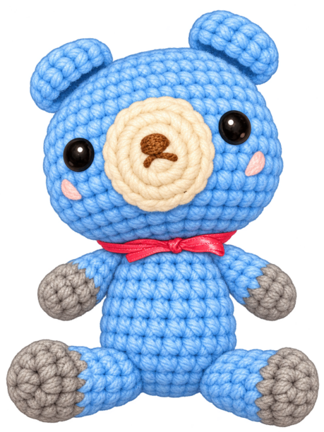

のんきちゃん
なまえをつけて、いっしょに遊ぼう
つないでね
モード：未接続
この画面は Web Bluetooth に対応した Chromium 系ブラウザの HTTPS または localhost で開いてください。
本体の時刻：未確認（接続すると時刻を合わせます）
東京の天気予報
今日：わからないの ／ 明日：わからないの
接続すると2日分を更新します。
日単位の予報。出典：Open-Meteo
さいきんの動き
動いたときのお話をここに表示します。
動きとセリフ1回たたくと、3秒間お話を聞くよ。
つないでね
本体とつながると、認識した動きをここに表示します。
本体をつなぐと、動きに反応するよ。
いまの姿勢（ジェスチャとは別判定）
判定待ち
角度 --°
おなまえ
保存すると、本体の自己紹介に使われます。
1〜10文字。前後の空白は整えます。
自己紹介の一例（1回タップで10種類からランダム）私はのんきちゃん。遊んでね
2回タップでは「ねえ、知ってる。」から始まる豆知識をお話しするよ。
本体につなぐと保存できます。
IRテスト送信
本体につなぐと送信先を読み込みます。
内蔵IR LEDから、前進・後退は5回、左・右は4回、本フレームを続けて送ります。
本体につなぐとテスト送信できます。
好きな文を話す
残り126バイト
おもちゃへの返事
標準の文は毎回おまかせで選びます。空欄にすると、返事を話さずにIRを送ります。各63バイトまで。
本体につなぐと設定を読み込みます。